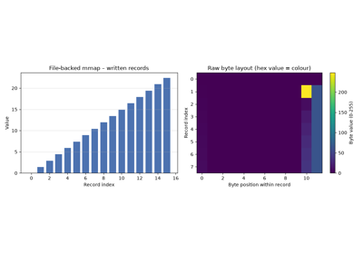
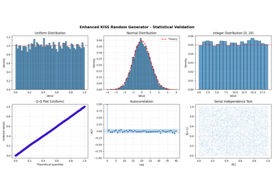
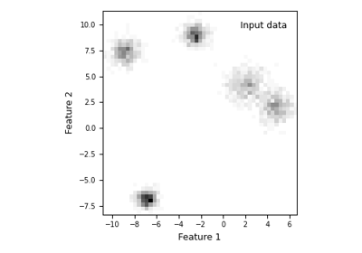
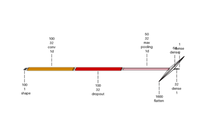
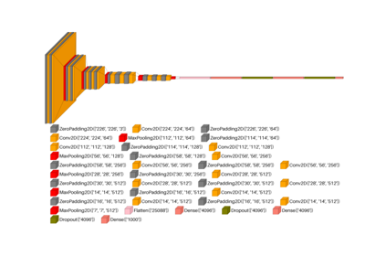

0.5.dev0+git.20260705.ec7d6d7 - July 05, 2026 08:26 UTC
Examples#
This is the gallery of examples that showcase how scikit-plots can be used. Some examples demonstrate the use of the APIs Reference in general and some demonstrate specific applications in tutorial form. Also check out our user guide for more detailed illustrations.
This page contains example plots. Click on any image to see the full image and source code.
Tagging!
You can also browse the example gallery by tags.
Jupyter Notebooks#
GitHub
scikit-plots lab pyodide with Notebooks
See also
jupyterlite lab pyodide:
jupyterlite lab all-in-one-pyodide[pyodide, xpython, r, c, cpp, sqlite, js, p5]:
jupyterlite lab all-in-one-xeus[xpython, r, c, cpp, js]:
jupyterlite lab terminal[pyodide]:
jupyterlite lab misc:
ANNoy#
ANNoy Vector Index DB#
Examples related to the annoy and _annoy submodule instance.


Approximate Nearest Neighbors with Annoy — A Hamlet Example


Array API support#
Examples related to the _lib submodule with e.g. LogisticRegression instance.
Calibration#
Examples related to the metrics submodule with e.g. LogisticRegression instance.
Classification#
Examples related to the estimators submodule with e.g. LogisticRegression instance.


Clustering#
Examples related to the estimators submodule with e.g. LogisticRegression instance.
Corpus#
Examples related to the corpus submodule.
# 💡 corpus Need additionals packages
curl -O https://raw.githubusercontent.com/scikit-plots/scikit-plots/main/requirements/corpus.txt
pip install -r requirements/corpus.txt
pip install scikit-plots[corpus]
# (Recommended)
# !pip install datasets transformers
# !pip install nltk gensim langdetect faster-whisper openai-whisper pytesseract youtube-transcript-api
# sudo apt-get install tesseract-ocr

corpus Knowledge and Information local .png with examples

corpus WHO European Region local or url per file with examples

corpus WHO European Region YouTube shorts with examples

corpus WHO European Region local .zip with examples
Cython#
Examples related to the cython submodule.
# 💡cython Need cython and setuptools
pip install scikitplot[build] setuptools
# (Recommended)
# !pip install cython setuptools


Multi-file builds: .pxi includes and external headers


Vector ops without NumPy: array(‘d’) + memoryviews

Workflow templates (train / hpo / predict) + CLI entry template

Decile#
Examples related to the decile submodule with e.g. LogisticRegression instance.
See also
Seaborn-style decile analysis (Lift / Gain / KS)
decileplot


Decomposition#
Examples related to the decomposition submodule with e.g. PCA instance.
Impute#
Examples related to the impute submodule
with a scikit-learn regressor (e.g., LinearRegression) instance.
# 💡impute may need voyager
pip install scikitplot[core]
# (Optionally)
# !pip install voyager
MemMap#
Examples related to the memmap submodule.

Memory-Mapping Showcase – Basic / Medium / Advanced
Misc#
Examples related to the misc submodule.
MLflow#
Examples related to the mlflow submodule
with a scikit-learn regressor (e.g., LinearRegression) instance.
# 💡mlflow Need mlflow
pip install scikitplot[mlflow]
# (Recommended)
# !pip install mlflow

Nc (NumCpp)#
Examples related to the nc submodule.

Preprocessing#
Examples related to the preprocessing submodule with
e.g., DummyCodeEncoder,
GetDummies instance.
See also

Random#
Examples related to the random submodule.

Enhanced KISS Random Generator - Complete Usage Examples
Regression#
Examples related to the metrics submodule with e.g., LinearRegression instance.

Seaborn#
Examples related to the seaborn submodule
with a scikit-learn regressor (e.g., LinearRegression) instance.


Stats#
Examples related to the stats submodule with e.g. LinearRegression instance.

Gaussian Mixture Models — AIC, AICc, and BIC Model Selection

Visualkeras#
Examples related to the visualkeras submodule with
e.g. a DL (ANN, CNN, NLP) tf.keras.Model model instance.
Important
⚠️ Hugging Face Deprecated Transformers models are not supported in TensorFlow — use KerasNLP or KerasHub instead.
# 💡visualkeras Need aggdraw tensorflow or tensorflow-cpu
pip install scikitplot[core, cpu]
# (Recommended)
# !pip install aggdraw
# !pip install tensorflow
python -c "import tensorflow as tf, google.protobuf as pb; print('tf', tf.__version__); print('protobuf', pb.__version__)"
python -m pip check
# If Needed
# pip install -U "protobuf<6"
# pip install protobuf==5.29.4
import tensorflow as tf

Visualkeras: Spam Classification Conv1D Dense Example

visualkeras: custom vgg16 show dimension example